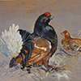

БАЙКА ПРО ТЕТЕРЕВА |
||
| БАЙКА ПРО ТЕТЕРЕВА АРЫСЬ РЕПКА КУРОЧКА РЯБА ПРИНЦЕССА НА ГОРОШИНЕ | ||
| Маша и медведь Морозко Лиса и журавль |
Захотел тетерев дом строить. Подумал-подумал: «Топора нет, кузнецов нет — топор сковать некому». Некому выстроить тетереву домишко. «Что ж мне дом заводить? Одна-то ночь куда ни шла!» Бултых в снег! В снегу ночку ночевал, поутру рано вставал, по вольному свету полетал, громко, шибко покричал, товарищей поискал. Спустился на землю, свиделся с товарищем. Они играли, по кусточкам бродили, местечко искали, гнездышки свивали, яичушки сносили и деток выводили. С детками они во чисто поле ходили, деток мошками кормили, на вольный свет выводили и по вольному свету летали и опять зимой в снегу ночевали. «А одна-то ночь куда ни шла! Чем нам дом заводить, лучше на березыньках сидеть, во чисто поле глядеть, красну весну встречать, шулдар-булдары кричать!» |
 |